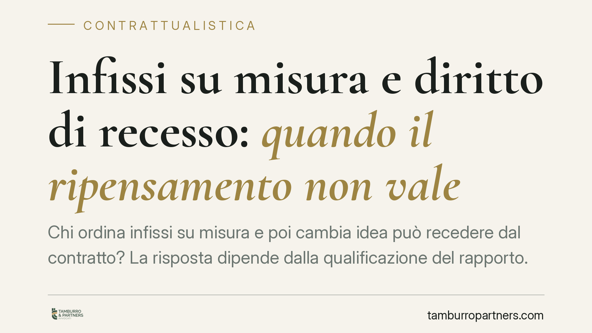

Infissi su misura e diritto di recesso: quando il ripensamento non vale
Chi ordina infissi su misura e poi cambia idea può recedere dal contratto? La risposta dipende dalla qualificazione del rapporto. Quando la fornitura comporta progettazione e realizzazione personalizzata, si è di fronte a un appalto e non a una vendita, con conseguenze rilevanti sul diritto di ripensamento del consumatore. Ecco cosa prevede la disciplina e come muoversi.

Il caso e la questione
Un cliente ordina infissi progettati e realizzati sulle misure specifiche della propria abitazione. Prima o dopo la consegna decide di annullare l'ordine e invoca il diritto di recesso. Il fornitore rifiuta la restituzione. Chi ha ragione?
La questione ruota attorno a due profili distinti: la natura del contratto (vendita o appalto) e l'applicabilità della disciplina consumeristica sul recesso.
Inquadramento normativo
Il primo nodo è la qualificazione del rapporto. La giurisprudenza consolidata distingue la vendita dall'appalto in base al criterio del prevalente *dare* rispetto al *fare*. Quando la prestazione consiste nella consegna di un bene già esistente o standardizzato, si tratta di vendita. Quando invece l'attività di lavorazione, progettazione e realizzazione su misura assume rilievo prevalente, il contratto si qualifica come appalto ai sensi dell'art. 1655 c.c.
La distinzione non è teorica. Nell'appalto opera l'art. 1671 c.c., che riconosce al committente il diritto di recedere dal contratto anche dopo l'inizio dei lavori, ma a condizione di tenere indenne l'appaltatore delle spese sostenute, dei lavori eseguiti e del mancato guadagno. È un recesso oneroso: chi si ripensa paga.
Diverso è il diritto di recesso previsto dal Codice del Consumo (D.Lgs. 206/2005) per i contratti a distanza e negoziati fuori dai locali commerciali, disciplinati agli artt. 45 e seguenti. L'art. 52 riconosce al consumatore un periodo di quattordici giorni per recedere senza fornire motivazioni e senza penalità.
Questo diritto, però, conosce eccezioni. L'art. 59, comma 1, lett. c) del D.Lgs. 206/2005 esclude il recesso per la fornitura di beni confezionati su misura o chiaramente personalizzati. La ratio è evidente: un bene realizzato secondo specifiche individuali difficilmente può essere ricollocato sul mercato.
Implicazioni pratiche
Per il consumatore che acquista infissi su misura, la conseguenza è netta. Se il bene è realizzato su specifiche personali, il ripensamento entro quattordici giorni non è esercitabile: l'eccezione dell'art. 59, comma 1, lett. c) prevale sul diritto di recesso ordinario.
Restano invece salvi i rimedi ordinari in caso di vizi, difetti di conformità o inadempimento del fornitore. L'esclusione riguarda solo il recesso libero, non la tutela contro prodotti difettosi o difformi dall'ordine.
Per il fornitore, il punto di attenzione è la formulazione dell'ordine. Un ordine generico, privo di specifiche di personalizzazione, rischia di essere riqualificato come vendita di bene standard, con conseguente riespansione del diritto di recesso del consumatore. La personalizzazione, per escludere il ripensamento, deve risultare in modo documentabile.
Cosa fare in concreto
- Verificare la natura del contratto: distinguere se l'ordine riguarda un prodotto a catalogo o un bene realizzato su misura incide direttamente sui diritti delle parti.
- Documentare la personalizzazione: indicare nell'ordine misure, specifiche tecniche e lavorazioni individuali, così da rendere applicabile l'eccezione dell'art. 59, comma 1, lett. c).
- Informare il consumatore: nei contratti a distanza o fuori dai locali, chiarire per iscritto l'esclusione del recesso quando il bene è personalizzato, evitando contestazioni successive.
- Quantificare in anticipo gli effetti economici: nell'ipotesi di appalto, è opportuno stimare in via preventiva le spese e il mancato guadagno rilevanti ai fini dell'art. 1671 c.c.
- Conservare la corrispondenza: preventivi, capitolati e conferme d'ordine costituiscono elementi utili a dimostrare il carattere personalizzato della fornitura.
Conclusione
La disciplina premia la sostanza sulla forma. Un bene realmente confezionato su misura sottrae al consumatore il ripensamento libero, mentre un ordine generico può riportare il rapporto nell'alveo della vendita con recesso ordinario. La qualificazione del contratto, quindi, è il presupposto da cui dipende ogni successiva valutazione.
Contributo informativo a cura di Tamburro & Partners Avvocati. Non costituisce parere legale.
Ogni contratto ha il suo equilibrio.
Se vuoi una revisione delle clausole o una redazione su misura, scrivi allo studio. Ti rispondiamo entro un giorno lavorativo.